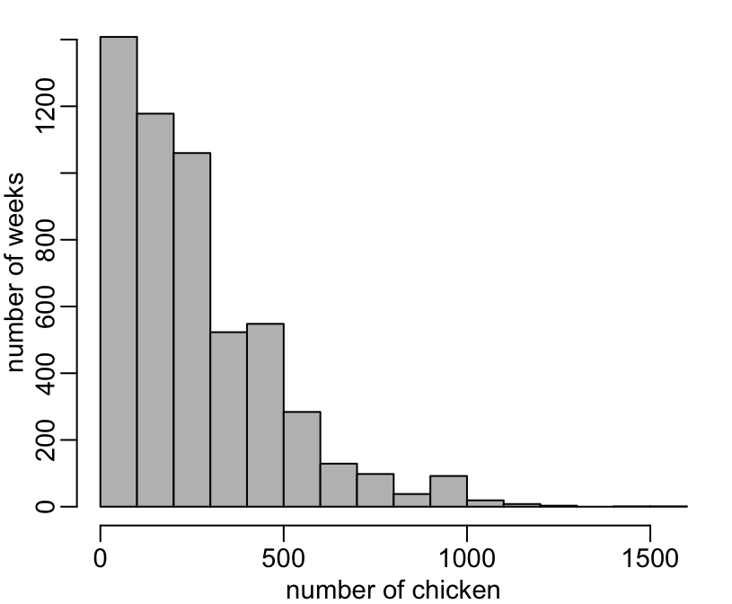

Installing the required packages:
> required <- c("dplyr", "magrittr", "readr")
> to_install <- setdiff(required, row.names(installed.packages()))
> if (length(to_install)) install.packages(to_install)Loading magrittr:
> library(magrittr)> viparc <- readr::read_csv("https://raw.githubusercontent.com/viparc/clires_data/master/data/viparc.csv",
+ col_types = paste(c("cii", rep("l", 6), rep("d", 45), "lil"), collapse = ""))No missing weeks:
> viparc %>%
+ dplyr::group_by(farm, flock) %>%
+ dplyr::arrange(week) %>%
+ dplyr::summarise(a = length(unique(diff(week)))) %>%
+ dplyr::ungroup() %>%
+ dplyr::filter(a > 1)
# A tibble: 0 x 3
# … with 3 variables: farm <chr>, flock <int>, a <int>Almost all the variables have missing values:
> sapply(viparc, function(x) any(is.na(x)))
farm flock week respiratory diarrhoea cns malaise leg_lesions sudden_death amoxicillin_g
FALSE FALSE FALSE FALSE FALSE FALSE FALSE FALSE FALSE TRUE
ampicillin_g apramycin_g cefadroxil_g cefotaxime_g ceftiofur_g cephalexin_g chloramphenicol_g ciprofloxacin_g colistin_g doxycycline_g
TRUE TRUE TRUE TRUE TRUE TRUE TRUE TRUE TRUE TRUE
enramycin_g enrofloxacin_g erythromycin_g florfenicol_g flumequine_g gentamicin_g josamycin_g kitasamycin_g lincomycin_g marbofloxacin_g
TRUE TRUE TRUE TRUE TRUE TRUE TRUE TRUE TRUE TRUE
methenamine_g neomycin_g norfloxacin_g oxytetracycline_g spectinomycin_g spiramycin_g streptomycin_g sulfachloropyridazine_g sulfadiazine_g sulfadimethoxine_g
TRUE TRUE TRUE TRUE TRUE TRUE TRUE TRUE TRUE TRUE
sulfadimidine_g sulfaguanidin_g sulfamethazine_g sulfamethoxazole_g sulfamethoxypyridazine_g sulphamethoxazole_g sulphathiazole_g tetracycline_g thiamphenicol_g tiamulin_g
TRUE TRUE TRUE TRUE TRUE TRUE TRUE TRUE TRUE TRUE
tilmicosin_g trimethoprim_g tylosin_g unknown_g completed nb_chicken sampling
TRUE TRUE TRUE TRUE TRUE TRUE FALSE But missing values concern only 2 weeks:
> weeks <- sort(unique(unlist(lapply(viparc, function(x) which(is.na(x))))))
> viparc[weeks, c("farm", "flock", "week")]
# A tibble: 2 x 3
farm flock week
<chr> <int> <int>
1 75-070 8 6
2 75-081 3 16There does not seem te be any outliers in the number of chicken:
> hist(viparc$nb_chicken, col = "grey", main = NA, xlab = "number of chicken", ylab = "number of weeks")
There seems to be an error on the amount of oxytetracycline during one of the weeks of observation:
> viparc %>%
+ dplyr::select(dplyr::ends_with("_g")) %>%
+ unlist() %>%
+ {.[. > 0]} %>%
+ sort(TRUE) %>%
+ head(20)
oxytetracycline_g5284 doxycycline_g246 methenamine_g3832 methenamine_g4106 methenamine_g4325 doxycycline_g3948 amoxicillin_g3903 amoxicillin_g3901 doxycycline_g3944 enrofloxacin_g4740 enrofloxacin_g4760
50000.00 200.00 190.00 190.00 190.00 120.00 109.59 100.00 100.00 100.00 100.00
enrofloxacin_g4765 methenamine_g3163 methenamine_g3489 methenamine_g3504 methenamine_g3525 methenamine_g3526 methenamine_g3848 methenamine_g3854 methenamine_g4028
100.00 95.00 95.00 95.00 95.00 95.00 95.00 95.00 95.00 It concerns the following week:
> viparc %>%
+ dplyr::filter(oxytetracycline_g > 200) %>%
+ dplyr::select(farm, flock, week)
# A tibble: 1 x 3
farm flock week
<chr> <int> <int>
1 75-115 1 6With this data point removed, it seems to make a little bit more sense:
> viparc %>%
+ dplyr::select(dplyr::ends_with("_g")) %>%
+ unlist() %>%
+ {.[. > 0]} %>%
+ {.[. < 300]} %>%
+ hist(0:200, col = "grey", main = NA, xlab = "antibiotic use (g)", ylab = "number of weeks")